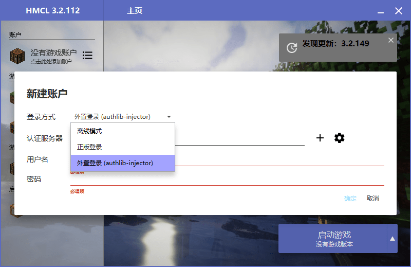

非官方客户端配置指南（以HMCL为例）
建议使用较新版本的启动器，以避免找不到认证服务器、进不了服务器等问题。
- 第一步：在启动器中新建游戏帐户，查看登录选项中是否除了“正版登录”、“离线登录”以外，还有“外置登录”或“authlib-injector”的选项。如果有，进入下一步；如果没有，请回到原教程并使用牛腩小镇提供的客户端或自行下载HMCL等支持外置登录的启动器再继续。

- 第二步：确定好启动器支持外置登录后，单击加号添加牛腩小镇的认证服务器地址“https://www.newnan.city/skin/public/api/yggdrasil”
注：请检查客户端文件夹内是否有名为“authlib-injectors.json”的文件，如果没有，可能会报错“远程主机强迫关闭了一个现有的连接”。请在此下载并添加。（提取码：dpzt）
- 第三步：填写好用户名及密码，下载游戏（1.14.4）并启动，然后回到原教程第五步继续配置。